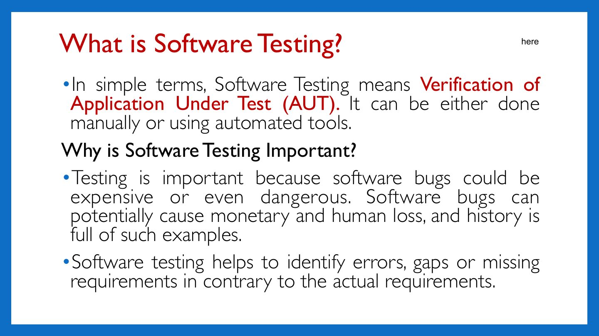
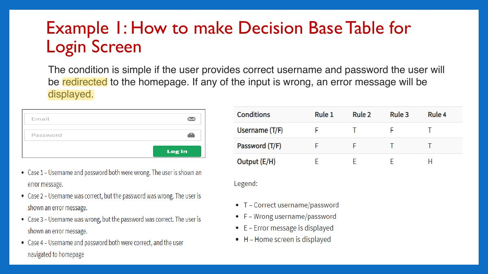
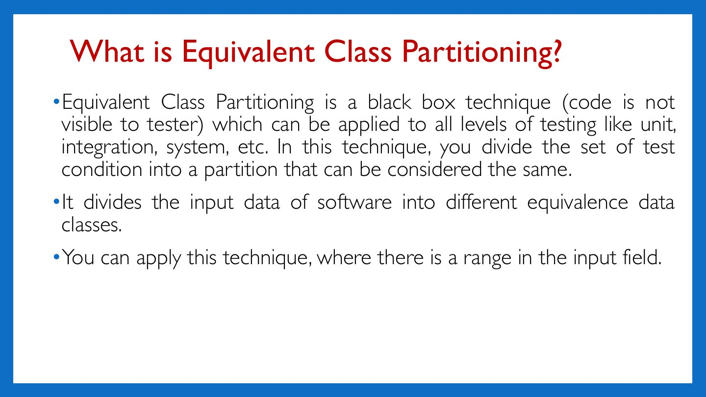
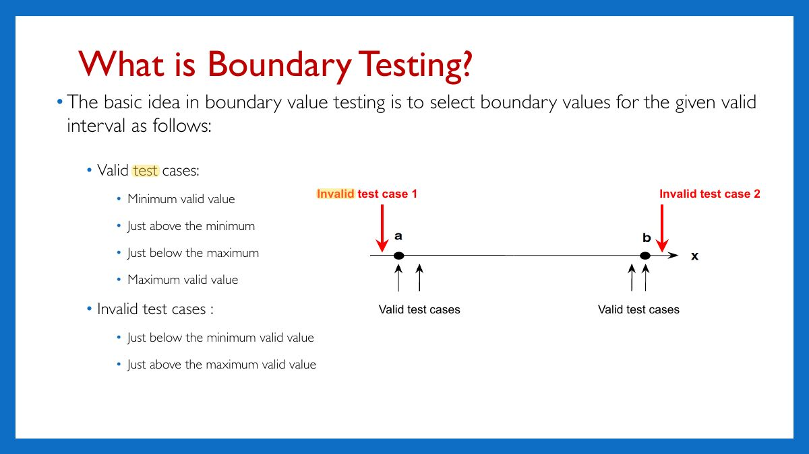
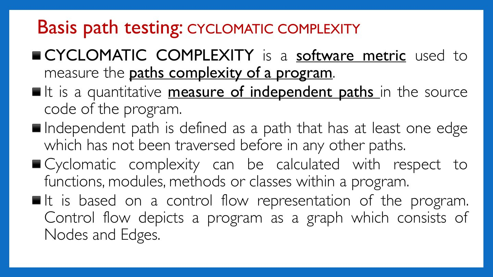
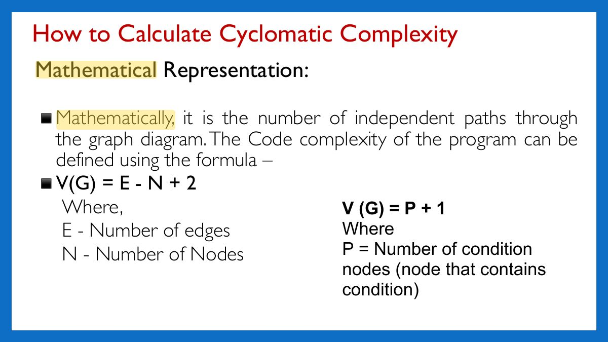

How many rules does a full decision table with 3 binary conditions have?
-
2³.
What testing is, black-box testing (decision tables, equivalence partitioning, boundary-value analysis), white-box basis path testing with flow graphs and cyclomatic complexity, unit and integration testing (top-down, bottom-up, stubs and drivers), system, non-functional, acceptance and regression testing.
Every original slide is shown unchanged. Yellow marks on a slide point to a numbered note: hover or tap a mark to jump to its note, and hover a note to see its marks. Questions tagged Past exam appeared on a real paper; Prediction questions are likely angles, not confirmed. Pick an answer to each question: a wrong pick tells you why it is wrong, so you can try again.

Testing: running a program to find defects before it is put into use. It shows the presence of bugs, not their absence.

Decision table: conditions × actions; each column is a rule → one test case. n binary conditions → up to 2ⁿ rules.
How many rules does a full decision table with 3 binary conditions have?

Equivalence partitioning: divide inputs into classes that behave the same; test one value from each (valid and invalid).
Valid ages are 18–60. How many equivalence classes?

Boundary value analysis: test at and around the edges: min−1, min, min+1, max−1, max, max+1.
Valid range 1–100. Which set is BVA?

Basis path testing (white-box): draw the flow graph, compute cyclomatic complexity, find independent paths, design one test per path.

Cyclomatic complexity V(G) = E − N + 2 = P + 1 (P = predicate/decision nodes) = number of regions. It is the number of independent paths.
Tip V(G) = E − N + 2 = decisions + 1 = regions.
A flow graph has 9 edges and 7 nodes. V(G) =
A function with 3 if-statements (no loops) has V(G) =
Integration testing: test the interfaces between combined units.
Stub: a dummy CALLED module (replaces a lower module in top-down integration). Driver: a dummy CALLING module (replaces an upper module in bottom-up).
Memory trick Top-down needs Stubs; Bottom-up needs Drivers.
Top-down integration testing needs:
System testing: test the complete integrated system against requirements (functional and non-functional: performance, load, stress, security, usability).
Acceptance testing: customers test with their data to decide whether to accept the system (alpha: at the developer’s site; beta: at users’ sites).
Testing by real users at their own sites before release is:
Regression testing: re-run tests after changes to make sure nothing that worked is now broken.